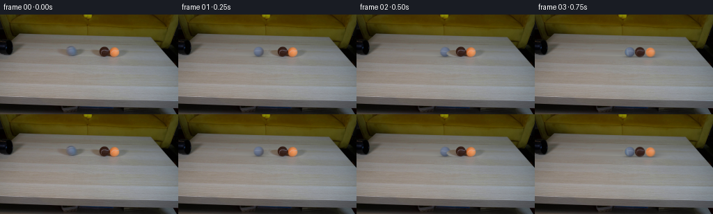
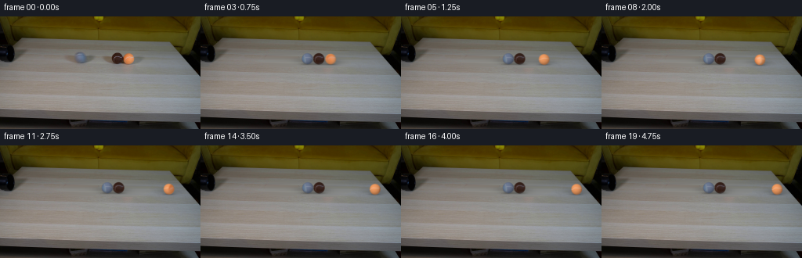
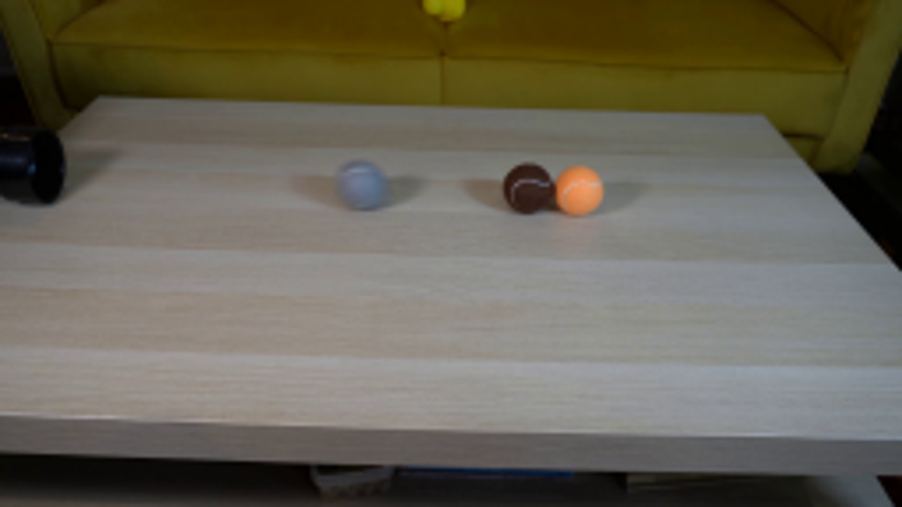
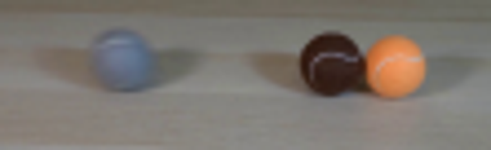
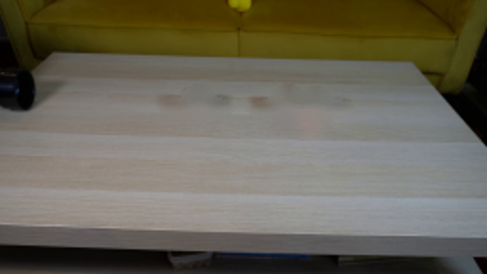
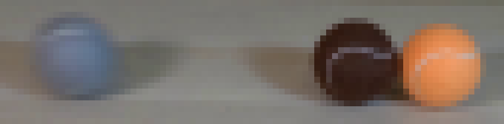
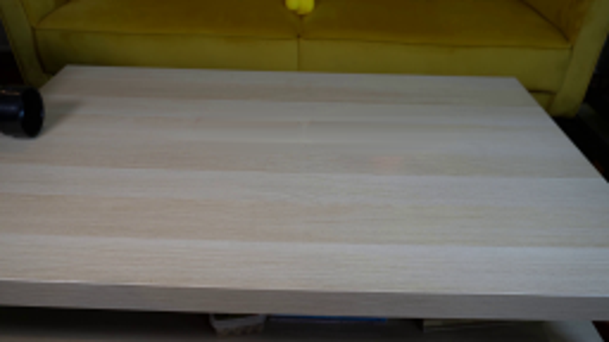
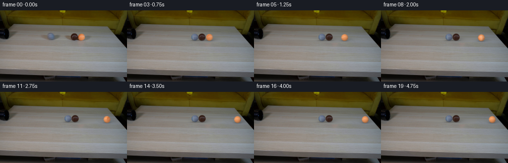
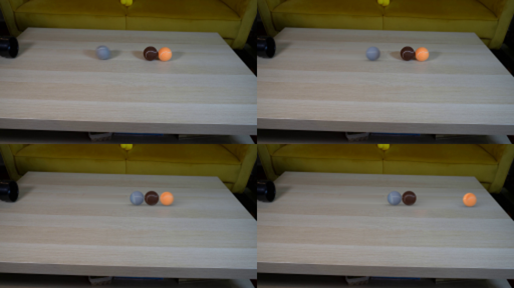

CODING AGENTS AS PIXEL WORLD MODELS
traex/GPT-6.1-Sol · 0029
点击播放 · 原生 RGB 像素
逐轮保存的候选
回放视频、检查图与代码变化。
每份候选均可单独播放。实际图片检查记录在下方工具轨迹中。
候选 01播放与检查图
点击播放 · 原生 RGB 像素


展开代码变化
--- 上一保存版本
+++ 本次保存版本
@@ -0,0 +1,175 @@
+from pathlib import Path
+import math
+import numpy as np
+from PIL import Image
+from scipy.ndimage import gaussian_filter, map_coordinates
+import cv2
+import artifact_io
+
+ROOT=Path(__file__).resolve().parent
+SOURCE=np.asarray(Image.open(ROOT/'first_frame.png').convert('RGB'),dtype=np.float64)
+H,W=SOURCE.shape[:2]
+YY,XX=np.mgrid[:H,:W]
+
+# Recover the visible tabletop by interpolating its horizontal wood bands only
+# through the footprints occupied by the three balls and their shadows.
+def clean_table():
+ mask=((((XX-104)/23)**2+((YY-54.7)/11)**2)<1)|((((XX-158)/30)**2+((YY-55)/11)**2)<1)
+ out=SOURCE.copy()
+ for yy in range(41,67):
+ for lo,hi in [(79,129),(125,192)]:
+ idx=np.where(mask[yy,lo:hi])[0]+lo
+ if len(idx)==0: continue
+ a,b=idx[0],idx[-1]
+ l=SOURCE[yy,a-5:a-1].mean(0);r=SOURCE[yy,b+2:b+6].mean(0)
+ t=(idx-a+1)/(b-a+2)
+ out[yy,idx]=l[None,:]*(1-t[:,None])+r[None,:]*t[:,None]
+ alpha=gaussian_filter(mask.astype(float),.5)
+ # The erased regions are wide enough that feathering touches only wood.
+ return out*alpha[:,:,None]+SOURCE*(1-alpha[:,:,None])
+
+BG=clean_table()
+# centers, radii, and material colors are measured from the input photograph.
+BALLS=[dict(x=102.7,y=52.85,r=7.05,col=[102,113,135],kind='grey'),
+ dict(x=150.05,y=53.65,r=7.15,col=[55,33,26],kind='brown'),
+ dict(x=164.45,y=54.1,r=6.85,col=[224,138,81],kind='orange')]
+
+# Shading model is used to remove the illumination from the photographed
+# front-hemisphere texture and reapply it after the ball rotates.
+def illumination(x,y,z):
+ light=np.maximum(0,-.30*x+.40*y+.86*z)
+ return .66+.36*light
+
+for b in BALLS:
+ x=(XX-b['x'])/b['r']; y=(b['y']-YY)/b['r']
+ z=np.sqrt(np.maximum(0,1-x*x-y*y))
+ sh=illumination(x,y,z)
+ # Local photographic texture with the background excluded at the rim.
+ body=SOURCE/sh[:,:,None]
+ sphere=(x*x+y*y)<.82**2
+ b['base']=np.median(body[sphere],axis=0)
+ b['body']=body
+
+# Numerically integrate equal-mass rolling balls with dissipative impacts and
+# constant rolling resistance. A small physical gap at the orange ball makes
+# the two collisions distinct rather than teleporting the whole row.
+DT=1/2400
+TMAX=5.05
+N=int(TMAX/DT)+1
+P=np.empty((N,3));V=np.empty((N,3))
+x=np.array([b['x'] for b in BALLS]);v=np.array([51.,0.,0.])
+r=np.array([b['r'] for b in BALLS]);friction=11.
+for i in range(N):
+ P[i]=x;V[i]=v
+ v=np.sign(v)*np.maximum(0,np.abs(v)-friction*DT)
+ x=x+v*DT
+ for k in range(5):
+ for j in range(2):
+ gap=x[j+1]-x[j]-(r[j]+r[j+1])
+ if gap<0:
+ x[j]+=gap*.5;x[j+1]-=gap*.5
+ closing=v[j]-v[j+1]
+ if closing>0:
+ impulse=.5*(1+.83)*closing
+ v[j]-=impulse;v[j+1]+=impulse
+
+def positions(t):
+ q=np.clip(t/DT,0,len(P)-1.00001);i=int(q);a=q-i
+ return P[i]*(1-a)+P[i+1]*a
+
+# Local 4x rasterization preserves soft photographic silhouettes during the
+# subpixel movements. Only moving ball footprints are redrawn.
+S=4
+
+def ball_patch(b,cx,cy,spin):
+ rad=b['r']
+ x0=int(math.floor(cx-rad-2));x1=int(math.ceil(cx+rad+2))
+ y0=int(math.floor(cy-rad-2));y1=int(math.ceil(cy+rad+2))
+ yy,xx=np.mgrid[y0*S:y1*S,x0*S:x1*S].astype(float)
+ xx=(xx+.5)/S-.5;yy=(yy+.5)/S-.5
+ nx=(xx-cx)/rad;ny=(cy-yy)/rad
+ rr=nx*nx+ny*ny;nz=np.sqrt(np.maximum(0,1-rr))
+ # Roll about an axis parallel to the table and transverse to travel.
+ axis=np.array([0.,.972,-.235]);c=math.cos(spin);s=math.sin(spin)
+ vec=np.stack([nx,ny,nz],axis=-1)
+ cross=np.cross(axis,vec);dot=np.sum(vec*axis,axis=-1)
+ rest=vec*c-cross*s+dot[:,:,None]*axis*(1-c)
+ ox,oy,oz=rest[:,:,0],rest[:,:,1],rest[:,:,2]
+ coords=[b['y']-oy*rad,b['x']+ox*rad]
+ tex=np.stack([map_coordinates(b['body'][:,:,k],coords,order=1,mode='nearest') for k in range(3)],axis=-1)
+ # Fill the initially unseen hemisphere with the same felt and a continuous
+ # curving pale tennis-ball seam, with no change to the original front.
+ f=oy-(.33+.13*np.sin(3.8*ox+.55))*oz
+ seam=np.exp(-.5*(f/.044)**2)
+ phase=2.1 if b['kind']=='grey' else .6
+ grain=(np.sin(ox*107+oy*91+oz*29+phase)+np.sin(ox*189-oy*147+phase))*.8
+ synth=b['base'][None,None,:]+grain[:,:,None]
+ seam_col=np.array([145,151,163]) if b['kind']=='grey' else (np.array([127,117,120]) if b['kind']=='brown' else np.array([239,200,174]))
+ synth=synth*(1-seam[:,:,None]*.72)+seam_col[None,None,:]*seam[:,:,None]*.72
+ # At the limb original pixels contain mixed background; taper to clean
+ # material before that texture is exposed by rotation.
+ front=np.clip((oz-.30)/.20,0,1)
+ albedo=tex*front[:,:,None]+synth*(1-front[:,:,None])
+ color=albedo*illumination(nx,ny,nz)[:,:,None]
+ # A slightly fuzzy edge and lens softness, rather than a hard CG circle.
+ alpha=np.clip((1-np.sqrt(rr))*rad/.65+.5,0,1)
+ premult=gaussian_filter(color*alpha[:,:,None],(.95,.95,0))
+ alpha=gaussian_filter(alpha,.95)
+ shape=(y1-y0,x1-x0)
+ a=alpha.reshape(shape[0],S,shape[1],S).mean((1,3))
+ col=premult.reshape(shape[0],S,shape[1],S,3).mean((1,3))
+ return x0,y0,col,a
+
+
+def render(t):
+ ps=positions(t)
+ canvas=BG.copy()
+ # Contact shadows adhere to the surface. The broad penumbra is very faint.
+ for j,b in enumerate(BALLS):
+ cx=ps[j]
+ cy=b['y']+.025*(cx-b['x'])
+ sx=XX-cx;sy=YY-(cy+b['r']-.3)
+ contact=np.exp(-.5*((sx/(b['r']*.72))**2+(sy/.88)**2))*.26
+ cast=np.exp(-.5*(((XX-(cx+4.0))/9.0)**2+((YY-(cy+3.8))/2.3)**2))*.13
+ shade=np.minimum(contact+cast,.34)
+ canvas*=1-shade[:,:,None]
+ # Objects are sorted along their depth (far edge first).
+ for j,b in enumerate(BALLS):
+ cx=ps[j];cy=b['y']+.025*(cx-b['x'])
+ spin=(cx-b['x'])/b['r']
+ x0,y0,col,a=ball_patch(b,cx,cy,spin)
+ hh,ww=a.shape
+ l=max(0,x0);rr=min(W,x0+ww);top=max(0,y0);bot=min(H,y0+hh)
+ if l>=rr or top>=bot:continue
+ aa=a[top-y0:bot-y0,l-x0:rr-x0,None]
+ cc=col[top-y0:bot-y0,l-x0:rr-x0]
+ canvas[top:bot,l:rr]=canvas[top:bot,l:rr]*(1-aa)+cc
+ # Until they are struck, retain the exact photographed pair and shadows.
+ # This avoids an unnecessary change in appearance of stationary objects.
+ for j in [1,2]:
+ if abs(ps[j]-BALLS[j]['x'])<.003:
+ b=BALLS[j]
+ if j==1:
+ mask=((XX-151)/12.0)**2+((YY-54)/10.5)**2
+ # Include left-hand penumbra of the brown ball.
+ mask=np.minimum(mask,((XX-143)/15.)**2+((YY-55.5)/5.2)**2)
+ else:
+ mask=((XX-167)/20.)**2+((YY-55)/10.5)**2
+ blend=np.clip((1-mask)*5,0,1)
+ canvas=canvas*(1-blend[:,:,None])+SOURCE*blend[:,:,None]
+ return np.clip(canvas,0,255)
+
+
+def main():
+ frames=[SOURCE.astype(np.uint8)]
+ for i in range(1,20):
+ t=i/4
+ # A normal short camera exposure, with no slow motion or camera drift.
+ samples=[render(t+q) for q in [-.016,0,.016]]
+ frames.append(np.rint(np.mean(samples,axis=0)).astype(np.uint8))
+ frames=np.stack(frames)
+ artifact_io.save(frames,ROOT)
+ print('Saved',frames.shape)
+ print('Final positions:',positions(4.75))
+
+if __name__=='__main__':main()
候选 02播放与检查图
点击播放 · 原生 RGB 像素

展开代码变化
--- 上一保存版本
+++ 本次保存版本
@@ -131,7 +131,8 @@
sx=XX-cx;sy=YY-(cy+b['r']-.3)
contact=np.exp(-.5*((sx/(b['r']*.72))**2+(sy/.88)**2))*.26
cast=np.exp(-.5*(((XX-(cx+4.0))/9.0)**2+((YY-(cy+3.8))/2.3)**2))*.13
- shade=np.minimum(contact+cast,.34)
+ soft=np.exp(-.5*(((XX-(cx-7.0))/8.5)**2+((YY-(cy+2.3))/2.5)**2))*.085
+ shade=np.minimum(contact+cast+soft,.36)
canvas*=1-shade[:,:,None]
# Objects are sorted along their depth (far edge first).
for j,b in enumerate(BALLS):
@@ -156,6 +157,11 @@
else:
mask=((XX-167)/20.)**2+((YY-55)/10.5)**2
blend=np.clip((1-mask)*5,0,1)
+ # Preserve the foreground of the approaching ball even where it
+ # crosses the stationary brown ball's broad penumbra.
+ gx=ps[0];gy=BALLS[0]['y']+.025*(gx-BALLS[0]['x'])
+ protect=np.clip((1.35-(((XX-gx)/BALLS[0]['r'])**2+((YY-gy)/BALLS[0]['r'])**2))*4,0,1)
+ blend*=1-protect
canvas=canvas*(1-blend[:,:,None])+SOURCE*blend[:,:,None]
return np.clip(canvas,0,255)
可观测工具轨迹
实际执行的命令与返回图片。
命令 1exit 0
/bin/bash -lc "ls -la && cat prompt.txt && printf '\\n---RULES---\\n' && cat GENERATION_RULES.md"
命令 2exit 0
/bin/bash -lc "cat artifact_io.py && python - <<'PY'
from PIL import Image
im=Image.open('first_frame.png'); print(im.size)
im.resize((1024,576)).save('.tmp/zoom.png')
PY"命令 3exit 0
/bin/bash -lc "python - <<'PY'
from PIL import Image
im=Image.open('first_frame.png'); im.crop((75,39,186,73)).resize((1110,340)).save('.tmp/balls.png')
PY"命令 4exit 0
/bin/bash -lc "python - <<'PY' import importlib.util for m in ['cv2','scipy','numpy','PIL']: print(m, bool(importlib.util.find_spec(m))) PY"
命令 5exit 0
/bin/bash -lc "cat > .tmp/testbg.py <<'PY'
import cv2
import numpy as np
from PIL import Image
im=np.array(Image.open('first_frame.png'))
m=np.zeros(im.shape[:2],np.uint8)
cv2.ellipse(m,(104,54),(10,10),0,0,360,255,-1)
cv2.ellipse(m,(103,56),(20,6),0,0,360,255,-1)
cv2.ellipse(m,(151,54),(10,10),0,0,360,255,-1)
cv2.ellipse(m,(158,57),(28,7),0,0,360,255,-1)
cv2.ellipse(m,(165,55),(10,10),0,0,360,255,-1)
a=cv2.inpaint(im,m,4,cv2.INPAINT_TELEA)
Image.fromarray(a).resize((1024,576)).save('.tmp/bg.png')
Image.fromarray(a).save('.tmp/bgsmall.png')
PY
python .tmp/testbg.py"命令 6exit 0
/bin/bash -lc "python - <<'PY'
from PIL import Image
im=Image.open('first_frame.png'); im.crop((90,43,175,64)).resize((1020,252),Image.Resampling.NEAREST).save('.tmp/nearest.png')
PY"命令 7exit 0
/bin/bash -lc "python - <<'PY'
from PIL import Image
import numpy as np
im=np.array(Image.open('first_frame.png'))
for cx,cy in [(103,53),(150,54),(164,54)]:
print(cx,cy)
for dy in [-4,-2,0,2,4]:
print(dy,[im[cy+dy,cx+dx].tolist() for dx in [-4,-2,0,2,4]])
PY"命令 8exit 0
/bin/bash -lc "cat > .tmp/bg2.py <<'PY'
import cv2
import numpy as np
from PIL import Image
from scipy.ndimage import gaussian_filter
im=np.array(Image.open('first_frame.png'),float)
y,x=np.mgrid[:144,:256]
m1=((x-104)/23)**2+((y-54.7)/11)**2
m2=((x-158)/30)**2+((y-55.0)/11)**2
mask=np.minimum(m1,m2)<1
out=im.copy()
for yy in range(41,67):
for lo,hi in [(79,129),(125,192)]:
idx=np.where(mask[yy,lo:hi])[0]+lo
if not len(idx):continue
a,b=idx.min(),idx.max()
left=im[yy,a-5:a-1].mean(0);right=im[yy,b+2:b+6].mean(0)
for xx in idx:
t=(xx-a+1)/(b-a+2)
out[yy,xx]=left*(1-t)+right*t
blur=gaussian_filter(mask.astype(float),.65)
# smooth fill only around edges
bg=out*blur[:,:,None]+im*(1-blur[:,:,None])
Image.fromarray(np.uint8(np.clip(bg,0,255))).resize((1024,576)).save('.tmp/bg2.png')
PY
python .tmp/bg2.py"命令 9exit 0
/bin/bash -lc "cat > generate.py <<'PY'
from pathlib import Path
import math
import numpy as np
from PIL import Image
from scipy.ndimage import gaussian_filter, map_coordinates
import cv2
import artifact_io
ROOT=Path(__file__).resolve().parent
SOURCE=np.asarray(Image.open(ROOT/'first_frame.png').convert('RGB'),dtype=np.float64)
H,W=SOURCE.shape[:2]
YY,XX=np.mgrid[:H,:W]
# Recover the visible tabletop by interpolating its horizontal wood bands only
# through the footprints occupied by the three balls and their shadows.
def clean_table():
mask=((((XX-104)/23)**2+((YY-54.7)/11)**2)<1)|((((XX-158)/30)**2+((YY-55)/11)**2)<1)
out=SOURCE.copy()
for yy in range(41,67):
for lo,hi in [(79,129),(125,192)]:
idx=np.where(mask[yy,lo:hi])[0]+lo
if len(idx)==0: continue
a,b=idx[0],idx[-1]
l=SOURCE[yy,a-5:a-1].mean(0);r=SOURCE[yy,b+2:b+6].mean(0)
t=(idx-a+1)/(b-a+2)
out[yy,idx]=l[None,:]*(1-t[:,None])+r[None,:]*t[:,None]
alpha=gaussian_filter(mask.astype(float),.5)
# The erased regions are wide enough that feathering touches only wood.
return out*alpha[:,:,None]+SOURCE*(1-alpha[:,:,None])
BG=clean_table()
# centers, radii, and material colors are measured from the input photograph.
BALLS=[dict(x=102.7,y=52.85,r=7.05,col=[102,113,135],kind='grey'),
dict(x=150.05,y=53.65,r=7.15,col=[55,33,26],kind='brown'),
dict(x=164.45,y=54.1,r=6.85,col=[224,138,81],kind='orange')]
# Shading model is used to remove the illumination from the photographed
# front-hemisphere texture and reapply it after the ball rotates.
def illumination(x,y,z):
light=np.maximum(0,-.30*x+.40*y+.86*z)
return .66+.36*light
for b in BALLS:
x=(XX-b['x'])/b['r']; y=(b['y']-YY)/b['r']
z=np.sqrt(np.maximum(0,1-x*x-y*y))
sh=illumination(x,y,z)
# Local photographic texture with the background excluded at the rim.
body=SOURCE/sh[:,:,None]
sphere=(x*x+y*y)<.82**2
b['base']=np.median(body[sphere],axis=0)
b['body']=body
# Numerically integrate equal-mass rolling balls with dissipative impacts and
# constant rolling resistance. A small physical gap at the orange ball makes
# the two collisions distinct rather than teleporting the whole row.
DT=1/2400
TMAX=5.05
N=int(TMAX/DT)+1
P=np.empty((N,3));V=np.empty((N,3))
x=np.array([b['x'] for b in BALLS]);v=np.array([51.,0.,0.])
r=np.array([b['r'] for b in BALLS]);friction=11.
for i in range(N):
P[i]=x;V[i]=v
v=np.sign(v)*np.maximum(0,np.abs(v)-friction*DT)
x=x+v*DT
for k in range(5):
for j in range(2):
gap=x[j+1]-x[j]-(r[j]+r[j+1])
if gap<0:
x[j]+=gap*.5;x[j+1]-=gap*.5
closing=v[j]-v[j+1]
if closing>0:
impulse=.5*(1+.83)*closing
v[j]-=impulse;v[j+1]+=impulse
def positions(t):
q=np.clip(t/DT,0,len(P)-1.00001);i=int(q);a=q-i
return P[i]*(1-a)+P[i+1]*a
# Local 4x rasterization preserves soft photographic silhouettes during the
# subpixel movements. Only moving ball footprints are redrawn.
S=4
def ball_patch(b,cx,cy,spin):
rad=b['r']
x0=int(math.floor(cx-rad-2));x1=int(math.ceil(cx+rad+2))
y0=int(math.floor(cy-rad-2));y1=int(math.ceil(cy+rad+2))
yy,xx=np.mgrid[y0*S:y1*S,x0*S:x1*S].astype(float)
xx=(xx+.5)/S-.5;yy=(yy+.5)/S-.5
nx=(xx-cx)/rad;ny=(cy-yy)/rad
rr=nx*nx+ny*ny;nz=np.sqrt(np.maximum(0,1-rr))
# Roll about an axis parallel to the table and transverse to travel.
axis=np.array([0.,.972,-.235]);c=math.cos(spin);s=math.sin(spin)
vec=np.stack([nx,ny,nz],axis=-1)
cross=np.cross(axis,vec);dot=np.sum(vec*axis,axis=-1)
rest=vec*c-cross*s+dot[:,:,None]*axis*(1-c)
ox,oy,oz=rest[:,:,0],rest[:,:,1],rest[:,:,2]
coords=[b['y']-oy*rad,b['x']+ox*rad]
tex=np.stack([map_coordinates(b['body'][:,:,k],coords,order=1,mode='nearest') for k in range(3)],axis=-1)
# Fill the initially unseen hemisphere with the same felt and a continuous
# curving pale tennis-ball seam, with no change to the original front.
f=oy-(.33+.13*np.sin(3.8*ox+.55))*oz
seam=np.exp(-.5*(f/.044)**2)
phase=2.1 if b['kind']=='grey' else .6
grain=(np.sin(ox*107+oy*91+oz*29+phase)+np.sin(ox*189-oy*147+phase))*.8
synth=b['base'][None,None,:]+grain[:,:,None]
seam_col=np.array([145,151,163]) if b['kind']=='grey' else (np.array([127,117,120]) if b['kind']=='brown' else np.array([239,200,174]))
synth=synth*(1-seam[:,:,None]*.72)+seam_col[None,None,:]*seam[:,:,None]*.72
# At the limb original pixels contain mixed background; taper to clean
# material before that texture is exposed by rotation.
front=np.clip((oz-.30)/.20,0,1)
albedo=tex*front[:,:,None]+synth*(1-front[:,:,None])
color=albedo*illumination(nx,ny,nz)[:,:,None]
# A slightly fuzzy edge and lens softness, rather than a hard CG circle.
alpha=np.clip((1-np.sqrt(rr))*rad/.65+.5,0,1)
premult=gaussian_filter(color*alpha[:,:,None],(.95,.95,0))
alpha=gaussian_filter(alpha,.95)
shape=(y1-y0,x1-x0)
a=alpha.reshape(shape[0],S,shape[1],S).mean((1,3))
col=premult.reshape(shape[0],S,shape[1],S,3).mean((1,3))
return x0,y0,col,a
def render(t):
ps=positions(t)
canvas=BG.copy()
# Contact shadows adhere to the surface. The broad penumbra is very faint.
for j,b in enumerate(BALLS):
cx=ps[j]
cy=b['y']+.025*(cx-b['x'])
sx=XX-cx;sy=YY-(cy+b['r']-.3)
contact=np.exp(-.5*((sx/(b['r']*.72))**2+(sy/.88)**2))*.26
cast=np.exp(-.5*(((XX-(cx+4.0))/9.0)**2+((YY-(cy+3.8))/2.3)**2))*.13
shade=np.minimum(contact+cast,.34)
canvas*=1-shade[:,:,None]
# Objects are sorted along their depth (far edge first).
for j,b in enumerate(BALLS):
cx=ps[j];cy=b['y']+.025*(cx-b['x'])
spin=(cx-b['x'])/b['r']
x0,y0,col,a=ball_patch(b,cx,cy,spin)
hh,ww=a.shape
l=max(0,x0);rr=min(W,x0+ww);top=max(0,y0);bot=min(H,y0+hh)
if l>=rr or top>=bot:continue
aa=a[top-y0:bot-y0,l-x0:rr-x0,None]
cc=col[top-y0:bot-y0,l-x0:rr-x0]
canvas[top:bot,l:rr]=canvas[top:bot,l:rr]*(1-aa)+cc
# Until they are struck, retain the exact photographed pair and shadows.
# This avoids an unnecessary change in appearance of stationary objects.
for j in [1,2]:
if abs(ps[j]-BALLS[j]['x'])<.003:
b=BALLS[j]
if j==1:
mask=((XX-151)/12.0)**2+((YY-54)/10.5)**2
# Include left-hand penumbra of the brown ball.
mask=np.minimum(mask,((XX-143)/15.)**2+((YY-55.5)/5.2)**2)
else:
mask=((XX-167)/20.)**2+((YY-55)/10.5)**2
blend=np.clip((1-mask)*5,0,1)
canvas=canvas*(1-blend[:,:,None])+SOURCE*blend[:,:,None]
return np.clip(canvas,0,255)
def main():
frames=[SOURCE.astype(np.uint8)]
for i in range(1,20):
t=i/4
# A normal short camera exposure, with no slow motion or camera drift.
samples=[render(t+q) for q in [-.016,0,.016]]
frames.append(np.rint(np.mean(samples,axis=0)).astype(np.uint8))
frames=np.stack(frames)
artifact_io.save(frames,ROOT)
print('Saved',frames.shape)
print('Final positions:',positions(4.75))
if __name__=='__main__':main()
PY
python generate.py"命令 10exit 0
/bin/bash -lc "python - <<'PY'
from PIL import Image,ImageDraw
out=Image.new('RGB',(1024,576))
for i,f in enumerate([0,1,3,10]):
im=Image.open('frames/%02d.png'%f).resize((512,288))
out.paste(im,((i%2)*512,(i//2)*288))
out.save('.tmp/candidate.png')
import generate
for t in [0,.25,.5,.65,.7,.75,1,2,4]:print(t,generate.positions(t))
PY"命令 11exit 0
/bin/bash -lc "python generate.py && python - <<'PY'
import numpy as np
from PIL import Image
p=np.load('pixels.npz')['pixels']
a=np.array(Image.open('first_frame.png')).astype(np.uint32)
f=(a[:,:,0]<<16)|(a[:,:,1]<<8)|a[:,:,2]
assert p.shape==(144,256,20)
assert np.array_equal(p[:,:,0],f)
print('Verified first frame and 20-frame RGB artifact.')
PY"视觉工具实际返回图片 1

视觉工具实际返回图片 2

视觉工具实际返回图片 3

视觉工具实际返回图片 4

视觉工具实际返回图片 5

视觉工具实际返回图片 6

视觉工具实际返回图片 7

保存候选 2 份；完成命令 11 次；可验证图片返回 7 张。原始 API 响应与完整日志保留在本地。